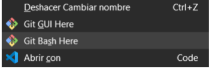

Introducción
Al iniciar un proyecto de cero, normalmente lo primero que haremos es crear una carpeta en nuestro disco duro en la cual vayamos a contener todos los archivos necesarios de nuestro proyecto. Esta sección es donde colocamos los archivos que queremos guardar en cada commit, así, le indicamos a GIT que son los archivos que deseamos almacenar en el repositorio.
Por otro lado, tendremos que crear un repositorio en GITHUB en el cual podamos almacenar nuestro proyecto de forma remota.
1. Posicionarse en la carpeta del proyecto
Para poder subir proyectos a la nube vamos a estar utilizando mucho la consola. En este caso, tal como mencionamos anteriormente, utilizaremos Git Bash.
La consola no sabe donde nosotros queremos inicializar un repositorio con GIT, por lo tanto, es nuestro deber asegurarnos de que dentro de la consola estamos posicionados dentro de la carpeta que queremos manejar mediante nuestro sistema de versiones. La mejor manera de asegurarnos de esto es abriendo en el explorador de archivos nuestra carpeta , hacer click derecho y presionar la opción “Git Bash here”. Esto hará que se abra la aplicación de Gitbash y que la misma comience a trabajar a partir del directorio de nuestro proyecto.

2. Git init
Este comando convertirá nuestro almacenamiento local en un repositorio de git. Creará una carpeta “.git” dentro de la carpeta de nuestro proyecto (Es una carpeta que por defecto se encuentra oculta, si quieren verla deberán habilitar la opción de ver las carpetas ocultas en su explorador de archivos). Este comando se utiliza sólo la primera vez que se quiere subir el repositorio a la nube.
$ git init
3. Git add
Este comando se utiliza para preparar archivos para la etapa de confirmación (commit) en el repositorio local. Se puede agregar un archivo a esta etapa de manera individual o bien podemos agregar múltiples archivos a la vez, pero normalmente vamos a estar agregando todos los archivos directamente a esta etapa de preparación, conocida también como stage.
$ git add *nombre-del-archivo*
$ git add *archivo-1* *archivo-2*
$ git add .
Es importante mencionar que una vez que un archivo se haya subido a la etapa de preparación, en caso de hacerle una modificación, se deberá volver a añadir a esta etapa.
4. Git commit
Este comando es una de las herramientas más importantes en el flujo de trabajo de Git. Es el comando que utilizamos para confirmar los cambios realizados en el repositorio local y registrarlos en la historia de versiones de Git. Al ejecutarlo, Git toma una instantánea de todos los archivos agregados a la zona de preparación (staging area) y los registra en la historia del repositorio. Cada commit es un punto de referencia en la historia del proyecto que se puede consultar en cualquier momento.
Además, al realizar un commit es importante incluir un mensaje que describa los cambios realizados en el repositorio. Esto ayuda a los demás desarrolladores a comprender que es lo que se realizó en dicho commit.
$ git commit -m 'Mi primer commit'
5. Git remote add
Este comando lo utilizaremos para agregar un repositorio remoto a un repositorio local de GIT, por lo tanto, este comando es el que nos permitirá establecer un vínculo entre ambos , de manera tal que se puedan sincronizar los cambios entre ambos repositorios, subir los cambios locales al repositorio remoto, descargar los cambios del remoto a local, etc. Este comando se utiliza sólo la primera vez que se quiere subir el repositorio a la nube.
$ git remote add origin *link del remoto*
6. Git push
Este comando se utiliza para enviar los cambios de un repositorio local a otro en línea, como lo es Github. Se utiliza luego de haber hecho un commit a los cambios que estaban en la zona de preparación con el fin de transferir dichos cambios al repositorio remoto. Al utilizarlo por primera vez en un repositorio, debemos colocarlo de la siguiente manera:
$ git push -u origin main
Luego, al subir más cambios al mismo repositorio, bastará con colocar git push. Este es el último paso a realizar para subir un proyecto a nuestro repositorio remoto. A partir de este punto, podemos seguir realizando cambios a nuestro repositorio local y subiendo dichos cambios a github utilizando los mismos comandos con la excepción de git init y git remote add, ya que, solo son necesarios la primera vez que se realice la subida.
Extra: Git status
Si bien no es un paso obligatorio para subir nuestro repositorio a Github, es importante conocer este comando. El mismo nos permite ver el estado actual del repositorio local. Cuando se ejecuta nos muestra una lista de archivos que han sido modificados o agregados al repositorio local desde el último commit.
También, nos muestra si existen archivos que aún no han sido agregados a la zona de preparación, y si hay conflictos entre las versiones local y remota del repositorio. Por último, también nos indica si hay cambios que aún no se han confirmado (No se ha realizado un commit) en el repositorio local.
Extra: Git clone, descargar un proyecto en el local
Muchas veces vamos a tener que llevar un proyecto desde la nube a nuestra computadora, si bien Github nos permite descargar el proyecto directamente con un botón de descarga, la mejor opción es utilizar el comando git clone, que se utiliza para crear una copia exacta de un repositorio de Git en el ámbito de trabajo local.
Este comando descarga todo el historial de versiones, archivos y metadatos del repositorio remoto a la máquina local, lo que permite a los desarrolladores trabajar en el proyecto de forma local y actualizar el proyecto con los cambios que se realicen (en caso de tener los permisos para hacerlo). Este comando es una buena opción cuando trabajamos en un proyecto de una empresa y nos piden que usemos el código que se encuentra en producción.
Para utilizarlo, debemos tener la url que apunta al repositorio del remoto que se quiere clonar, que lo podemos sacar clickeando en el botón verde <> code de nuestro repositorio en Github y copiando el link que nos aparece en el desplegable. Finalmente, copiamos ese link luego de colocar git clone en la línea de comandos.
$ git clone *ruta absoluta del repositorio remoto a clonar*
Importante: Si utilizamos la opción “Download Zip” se nos decargará el proyecto en local pero no mantendrá la vinculación al repositorio, lo cual implica que no podremos hacer ningún tipo de modificación al proyecto y subirla a la nube (en caso de que tuviéramos acceso y permiso para hacerlo).
Extra: Git pull - Actualizando en el local desde la nube
Puede suceder también, en especial si estamos trabajando entre varias personas en un mismo repositorio, que tengamos desactualizado el repositorio local vinculado a ese remoto que tiene cambios nuevos.
Para poder traernos esos cambios nuevos y no volver a descargar el repositorio, arriesgándonos a perder los cambios que nosotros hicimos en local, debemos utilizar el comando git pull.
Este comando se utiliza para descargar y fusionar cambios de un repositorio remoto en un repositorio local. Es una combinación entre el comando git fetch (que se utiliza para descargar los cambios del repositorio remoto) y git merge ( se utiliza para fusionar los cambios del proyecto en la nube con el proyecto local).
Es una herramienta muy útil cuando se trabaja en un proyecto con varios desarrolladores y es necesario asegurarse de tener la versión más actualizada del código antes de empezar a trabajar en él.
Clear - Limpiar la consola de Gitbash
En ocasiones estaremos trabajando en un proyecto donde nuestra consola de Git ha tenido mucha actividad, esto puede dificultar algunas lecturas o llegar a ser molesto visualmente. Para limpiar la consola de Git, debemos utilizar el comando ‘clear’.
clear